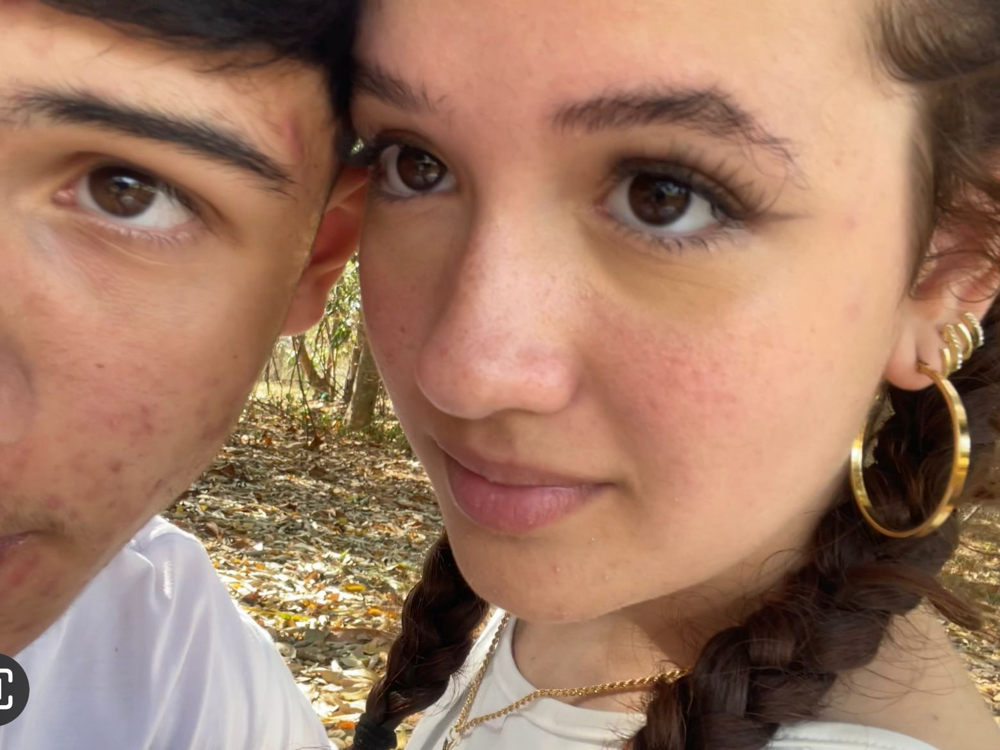

Juliana Albuquerque completa 16 anos
e isso emociona namorado
O Isaque expressa grande felicidade pelo fato de terem transcorrido seis anos desde que se conheceram
30/06/2024 22:27 Atualizado a algumas horas
